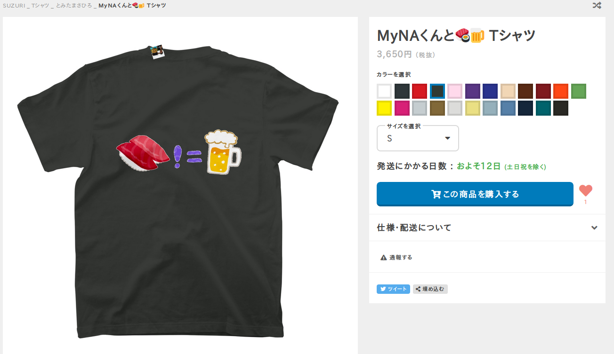

自己紹介

- とみたまさひろ
- @tmtms
- 富士通クラウドテクノロジーズ
- 日本MySQLユーザ会 文字化け担当
- https://tmtm.github.io/mysql-params/
とみたまさひろ
2019-08-19
MyNA会 2019年8月
a = A = Ａ, 1 = ①
は = ぱ = ば = ハ = パ = バ
平成 = ㍻
https://suzuri.jp/tmtms/1934346/t-shirt/s/sumi

mysql> SHOW COLLATION LIKE 'utf8mb4%bin';
+------------------+---------+-----+---------+----------+---------+---------------+
| Collation | Charset | Id | Default | Compiled | Sortlen | Pad_attribute |
+------------------+---------+-----+---------+----------+---------+---------------+
| utf8mb4_0900_bin | utf8mb4 | 309 | | Yes | 1 | NO PAD |
| utf8mb4_bin | utf8mb4 | 46 | | Yes | 1 | PAD SPACE |
+------------------+---------+-----+---------+----------+---------+---------------+
PAD SPACE - 末尾空白文字の有無を無視する
NO PAD - 末尾空白文字の有無を無視しない
utf8mb4_*0900_*mysql> set names utf8mb4 collate utf8mb4_unicode_520_ci;
mysql> select 'a' = 'a ';
+--------------+
| 'a' = 'a ' |
+--------------+
| 1 |
+--------------+
mysql> set names utf8mb4 collate utf8mb4_0900_ai_ci;
mysql> select 'a' = 'a ';
+--------------+
| 'a' = 'a ' |
+--------------+
| 0 |
+--------------+
NO PAD バージョンが欲しいmysql> set names utf8mb4 collate utf8mb4_bin;
mysql> select 'a' = 'a ';
+--------------+
| 'a' = 'a ' |
+--------------+
| 1 |
+--------------+
mysql> set names utf8mb4 collate utf8mb4_0900_bin;
mysql> select 'a' = 'a ';
+--------------+
| 'a' = 'a ' |
+--------------+
| 0 |
+--------------+
デフォルト: utf8mb4_0900_ai_ci
| 要素 | 意味 |
|---|---|
| utf8mb4 | 4バイトUTF-8 |
| 0900 | Unicode 9.0.0 |
| ai | アクセントの違いを無視 |
| ci | 大文字小文字の違いを無視 |
0900 は Unicode 9.0.0 準拠のCollationという意味utf8mb4_0900_bin は Unicode 準拠じゃないNO PADなCollationは0900だけだからこうなった？測ってないけどたぶん utf8mb4_bin よりも速いから
みんな utf8mb4_0900_bin を使うといいと思う